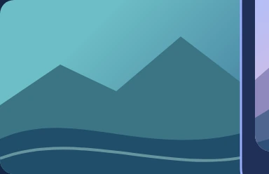
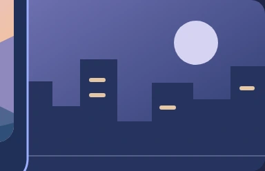
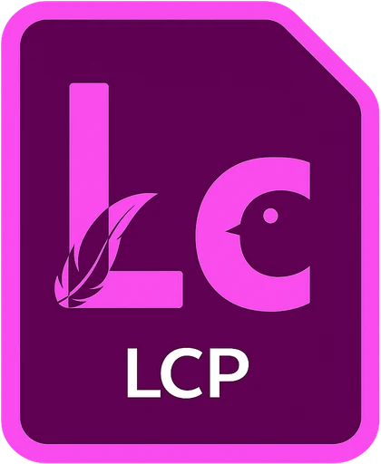

以画面寻找素材
自动识别镜头切点，用分镜列表或缩略图网格浏览长视频。安装语义检索组件后，输入画面描述，即可跨视频寻找相关镜头。
面向视频创作者的镜头工作软件
从海量拍摄素材到精选镜头，让查找更直观，让整理更有序。每一项能力都服务于下一次创作决定。
自动识别镜头切点，用分镜列表或缩略图网格浏览长视频。安装语义检索组件后，输入画面描述，即可跨视频寻找相关镜头。
用媒体箱组织素材，以星级、旗标、色标和层级关键字筛选镜头。将相关镜头组成堆叠，让素材库保持清晰。
检查画面与镜头衔接，调整切点，导出原始分辨率静帧。配合代理预览与可调整的面板布局，专注每一次选择。
预览并微调入点与出点，逐项输出或合并为一个文件。按需要设置画面、音频、文件命名与输出位置。
03 / VISUAL SEARCH · 交互示意
安装语义检索组件后，用一句自然语言描述人物、动作或环境，即可在本机素材中查找相关画面。无需先准备字幕。
DESCRIBE THE SHOT
“黄昏时的海岸线”
示例画面来自项目官方视觉稿，仅用于展示检索交互，并非真实检索结果。


素材从进入项目开始，始终处于清晰、可接续的工作流中。
视频、音频、图像与可选字幕集中管理。
浏览自动分镜，或描述所需场景。
添加标记、关键字与星级，编成有序集合。
核对范围，独立输出或合并成片。
PROJECT FILE / AUTO SAVE

关于素材、项目与运行环境，你可能想了解这些。
可以。分镜浏览不依赖字幕；安装语义检索组件后，可直接按画面描述查找镜头。已有字幕时，还可按对白文字或含义检索。
不会。媒体分析、镜头检测、语义检索、预览和导出均在本机完成，日常素材处理无需上传文件。
需要 64 位 Windows 10 或 Windows 11。可用窗口至少为 1080 × 700，建议使用 1920 × 1080 或更高分辨率显示器，并为素材、缓存和导出文件预留磁盘空间。
使用 .lcp 项目保存素材组织与镜头标注，配合自动保存和项目副本继续创作。移交项目时，请同时提供原始素材。
你的下一个镜头，正在素材里等你。
免费下载 Locution Pro，让每一个值得保留的镜头触手可及。
下载 Locution Pro